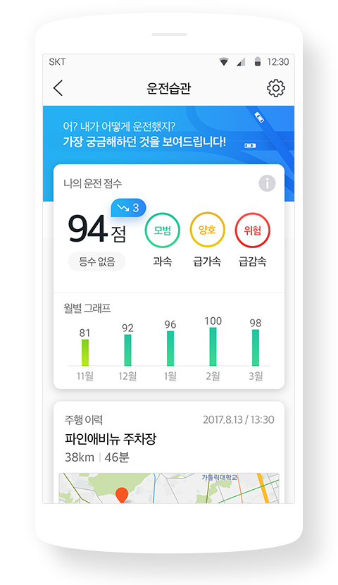
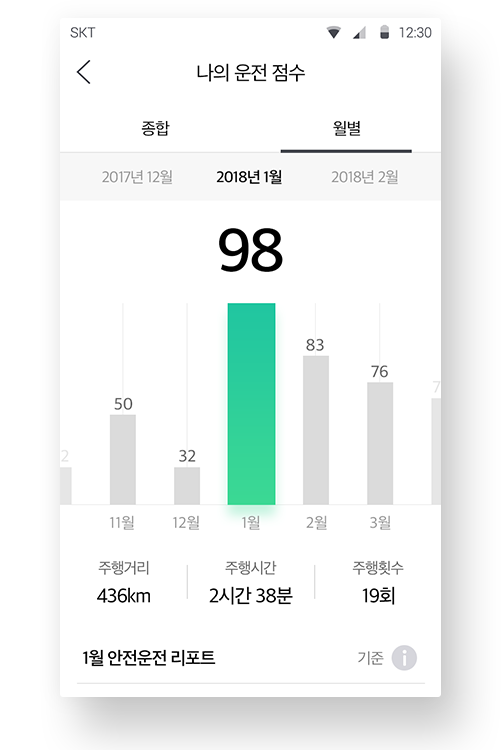
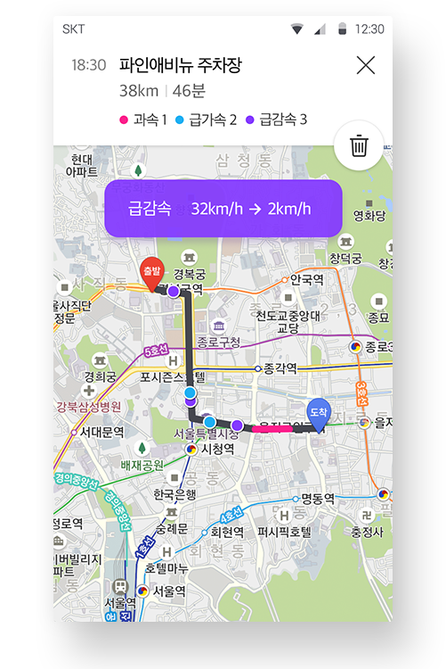

T map과 함께하는 안전운전 습관
새롭게 업그레이드된
운전습관 이용하기

나의 운전습관
독자적인 알고리즘을 통한
정밀한 주행 데이터 분석
목적지를 설정하고 길안내 받으신 주행 경로에
대하여 정밀한 데이터 분석을 통해 안전운전
점수와 안전운전 가이드를 알려드립니다.
1.
T map
길안내 완료
2.
주행이력 바탕
데이터 분석
3.
나의 운전 점수
운전습관 확인
월별 점수
나의 주행을 돌아보는
월별 분석 리포트
나의 운전 패턴을 안전운전 점수와 주행거리,
주행시간, 주행횟수를 한눈에 파악해 보세요.

주행 이력
지도에서 확인 가능한
주행 경로와 위반 지점
나의 주행 경로가 지도에 표시됩니다.
과속/급가속/급감속 지점을 확인해보세요.

혜택
자동차보험
할인 혜택!
T map으로 500km 이상 길안내 받으면서,
안전하게 운전하시면 자동차보험 할인
혜택을 받을 수 있습니다.
개인 정보 보호
안전하게 보관되는
나의 주행정보
주행관련 개인 정보는 다른 기관에 제공되지
않으며, 자동차 보험 가입 시, 할인 조건 만족
여부만 보험사에 전달됩니다.
운전습관 서비스를 탈퇴하시면 모든 관련
정보가 즉시 삭제됩니다.
운전습관 시작하기